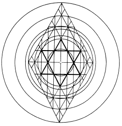

Ephesus
Smyrna
Pergamos
7 Levels of Jacob's Ladder,
the 7 Candlesticks of the Menorah,
the 7 Stations of the Cross,
the 7 Pillars of Islam,
the 7 Chakras,
the 7 Churches of Asia,
and the 7 Days of Week
Sardis
Philadelphia
Laodicea
Wheels within Wheels:The perfect focus can be known. It is ineffable. If your meditations can be put into words, those words will not describe God,nor shall they suggest limitations, however they are intended. Hear, O Y'sharla your la is HWHY, and there is no other: If nothing but truth passes through your mind while thinking of God, none of it captures the reality of Elohim, nor does any of it reflect the subtleties of the Presence-- the faces of HaShem. |
|
Hear, O Y'sharla, YHWH your la is one YHWH. |
| I AM
hwhy! I am Cause, the Father; and I am Effect, the Mother |
| Cycles, and through cycles of cycles,
there is no la beside me. I
AM. |
|  The Open Center Represents the Throne of the Seven Spirits of la |
larcy, the
Nation of Y'Sharla became (y)
Straight, Aligned (rc) with God (la),
saying My y ruler
rc is God la: my struggle, wrestling
rcy is with God la:
My y God la
is straight forward rcy;
My
y God la is
righteous rcy;
My
y God la is
just rcy.
|
Churches of Asia: Ephesus Smyrna Pergamos |
The Seven Spirits of
dja jwjy are honored in the 7 Levels of Jacob's Ladder, the 7 Candlesticks of the Menorah, the 7 Stations of the Cross, the 7 Pillars of Islam, the 7 Chakras, the 7 Churches of Asia, and the 7 Days of Week |
Thyatira Sardis Philadelphia Laodicea |
| t c r q x p o s n m l Font k y f j z w h d g b a | ||
| site |
book |
|